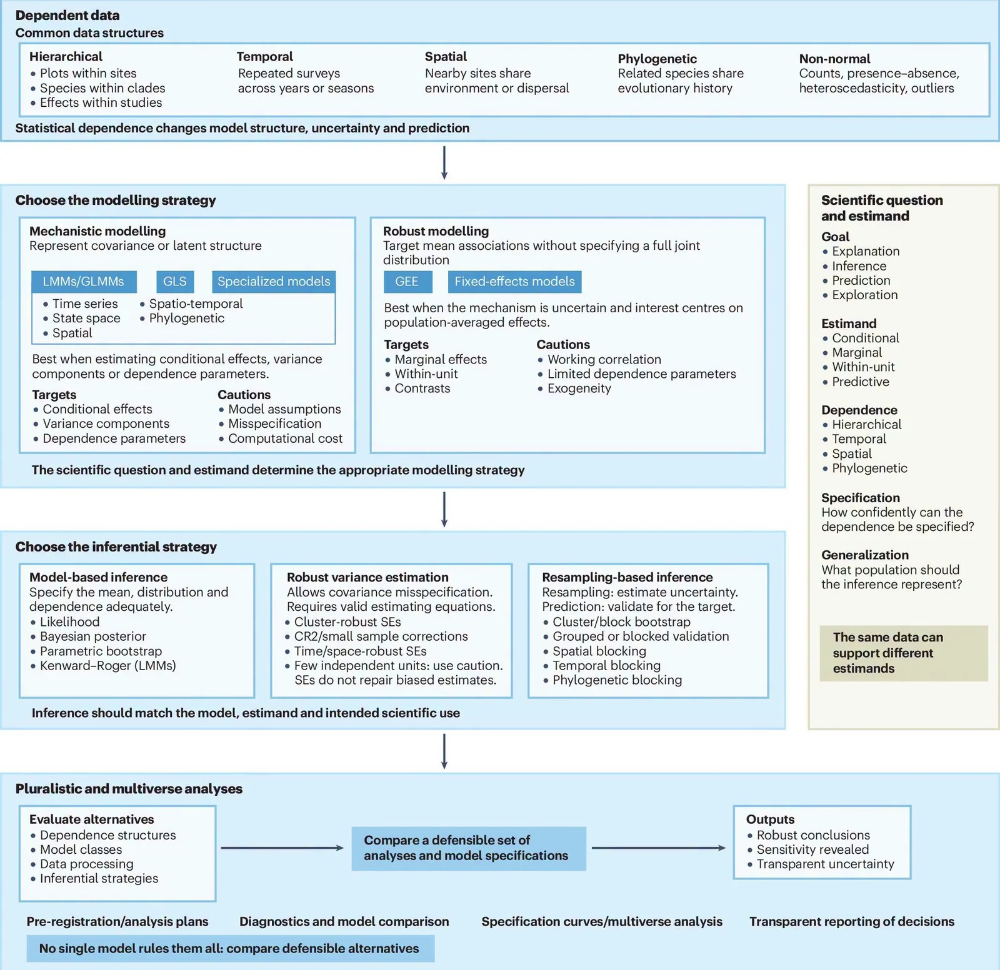

পরিসংখ্যান · গবেষণাপদ্ধতি · ডেটা বিশ্লেষণ
গবেষণায় নির্ভরশীল ডেটা: মডেল ও অনিশ্চয়তা কেন বদলায়
বিজ্ঞানজিজ্ঞাসা · ২৪ নভেম্বর ২০২৬
একটি গবেষণায় ২,০০০টি মাপ আছে—শুনতে বড় নমুনা। কিন্তু সেগুলো যদি ৫০০ জন রোগীর কাছ থেকে চারবার করে নেওয়া হয়, তবে সব মাপকে ২,০০০টি সম্পূর্ণ আলাদা তথ্য ধরে বিশ্লেষণ করা ঠিক হবে না। একই ব্যক্তির মাপগুলো প্রায়ই একে অপরের সঙ্গে সম্পর্কিত। এই সম্পর্ককে উপেক্ষা করলে গড়, অনিশ্চয়তা, পরীক্ষার ফল এবং নতুন জায়গায় পূর্বাভাস—সবই ভুলভাবে বোঝা যেতে পারে।
‘স্বাধীন পর্যবেক্ষণ’ বলতে কী বোঝায়?
সহজভাবে বললে, একটি পর্যবেক্ষণ অন্যটির তথ্য বহন করছে না—এমন পরিস্থিতিকে স্বাধীনতার ধারণা দিয়ে বোঝানো হয়। বাস্তবে অনেক তথ্যই কোনো ভাগ করা ব্যক্তি, জায়গা, সময়, গবেষণা বা বিবর্তনীয় ইতিহাসের সঙ্গে যুক্ত। একই রোগীর আজ ও আগামী মাসের রক্তচাপ, একই স্কুলের দুই শিক্ষার্থীর ফল, পাশাপাশি গ্রামের বায়ুদূষণ, কিংবা একই গোষ্ঠীর কাছাকাছি প্রজাতির বৈশিষ্ট্য—এগুলোকে আলাদা আলাদা বিন্দু হিসেবে লিখলেও তাদের মধ্যে যোগসূত্র থাকতে পারে।
যোগসূত্র থাকলেই ডেটা ব্যবহার করা যাবে না, এমন নয়। বরং সেই গঠনটি বিশ্লেষণে ধরতে হয়। সাধারণ বিশ্লেষণ যদি প্রতিটি সারিকে স্বাধীন ধরে, অথচ সারিগুলো গুচ্ছবদ্ধ বা ধারাবাহিক হয়, তাহলে কার্যকর তথ্যের পরিমাণ প্রকৃত পর্যবেক্ষণসংখ্যার চেয়ে কম হতে পারে। এতে standard error ও confidence interval ভুল হতে পারে; কিছু পরিস্থিতিতে তা অতিরিক্ত ছোট হয়ে গিয়ে প্রমাণকে বাস্তবের চেয়ে জোরালো দেখাতে পারে।
নির্ভরতার কয়েকটি পরিচিত ধরন
- স্তরভিত্তিক বা hierarchical: জমির প্লট সাইটের মধ্যে, শিক্ষার্থী স্কুলের মধ্যে, প্রজাতি বিবর্তনীয় গোষ্ঠীর মধ্যে, কিংবা একাধিক প্রভাব গবেষণার মধ্যে থাকে। একই গোষ্ঠীর সদস্যরা পরিবেশ বা ইতিহাস ভাগ করে।
- সময়ভিত্তিক বা temporal: একই মানুষকে বারবার জরিপ করা, এক অঞ্চলের সাপ্তাহিক সংক্রমণ মাপা, বা ঋতু ধরে ফল নথিবদ্ধ করা। কাছাকাছি সময়ের পর্যবেক্ষণ প্রায়ই বেশি মিল রাখে।
- স্থানভিত্তিক বা spatial: পাশাপাশি এলাকার পরিবেশ, আবহাওয়া, দূষণ বা মানুষের চলাচল মিলতে পারে। মানচিত্রে পাশাপাশি থাকা স্থানগুলোর তথ্য তাই পরস্পরের সঙ্গে সম্পর্কিত হতে পারে।
- বিবর্তনীয় বা phylogenetic: ঘনিষ্ঠভাবে সম্পর্কিত প্রজাতি সাধারণ পূর্বপুরুষ থেকে বৈশিষ্ট্য পেয়েছে; তাদের তথ্য স্বাধীন ধরে নিলে সেই ইতিহাস হারিয়ে যেতে পারে।
এগুলো একে অপরের বিকল্প নয়। একই ডেটায় ব্যক্তি-স্তরের পুনরাবৃত্তি, হাসপাতালভিত্তিক গুচ্ছ এবং সময়ের সম্পর্ক—তিনটিই থাকতে পারে।
বণ্টনের ধরন আর নির্ভরতা এক জিনিস নয়
সংখ্যা গোনা, উপস্থিতি-অনুপস্থিতি, খুব অসম বিস্তার, ভিন্ন গোষ্ঠীতে ভিন্ন variance, বা অস্বাভাবিক বড়-ছোট মান—এগুলো ফলের বণ্টন বা মডেলের অন্যান্য বৈশিষ্ট্য নিয়ে প্রশ্ন তোলে। কিন্তু এগুলো নিজেরা নির্ভরতার ধরন নয়। কোনো ফল count হতে পারে এবং একই সঙ্গে সময় বা স্থানের সঙ্গে নির্ভরশীলও হতে পারে। তাই দুটি আলাদা প্রশ্ন করতে হয়: ফলের বণ্টন কেমন, আর পর্যবেক্ষণগুলোর মধ্যে কী ধরনের সম্পর্ক আছে?
চিত্রে দেখানো সিদ্ধান্তের ধাপ
নিচের চিত্রটি নির্ভরশীল ডেটা বিশ্লেষণের একটি মানচিত্র। আগে ডেটার গঠন চিহ্নিত করতে হয়; তারপর গবেষণার প্রশ্ন ও যে প্রভাবটি মাপতে চাই সেটি অনুযায়ী মডেল, অনিশ্চয়তা নির্ণয় এবং সংবেদনশীলতা বিশ্লেষণ বেছে নিতে হয়। চিত্রটি বড় করে দেখতে ছবিতে চাপ দিন।

চিত্রটির মূল কথা: একই ডেটা থেকেও আলাদা গবেষণা-প্রশ্নে আলাদা estimand—অর্থাৎ যে নির্দিষ্ট প্রভাব বা পরিমাণটি জানার লক্ষ্য—হতে পারে। যেমন, একজন ব্যক্তির নিজের আগের অবস্থার তুলনায় পরিবর্তন (within-unit), নাকি পুরো জনগোষ্ঠীর গড় প্রভাব (marginal effect)? এই লক্ষ্য না জানলে শুধু সফটওয়্যারের মডেল-নাম দেখে সিদ্ধান্ত নেওয়া যায় না।
কোন মডেল কখন কাজে লাগে?
Mixed-effects model-এ গোষ্ঠীর মধ্যে থাকা মিল এবং গোষ্ঠীগুলোর মধ্যে পার্থক্যকে random effects বা covariance structure দিয়ে প্রকাশ করা যায়। উদাহরণস্বরূপ, বহু স্কুলের শিক্ষার্থীদের পরীক্ষার নম্বর বিশ্লেষণে প্রতিটি স্কুলের নিজস্ব প্রাথমিক স্তর থাকতে পারে। Linear mixed model ধারাবাহিক ফলের জন্য; generalized linear mixed model count বা binary ফলের উপযোগী বিন্যাস দিতে পারে। এই মডেলগুলো প্রায়ই গোষ্ঠী ও covariate নির্দিষ্ট রেখে conditional effect জানায়।
GLS ও বিশেষায়িত মডেল সময়, স্থান, phylogeny বা state-space গঠনের মতো নির্দিষ্ট covariance বর্ণনা করতে পারে। যখন প্রক্রিয়া বা নির্ভরতার গঠন নিয়ে বৈজ্ঞানিক জ্ঞান থাকে, তখন সেটি মডেলে স্পষ্ট করে আনা সুবিধাজনক হতে পারে। তবে ভুল covariance কাঠামো বা অতিরিক্ত জটিল মডেল ফলকে সংবেদনশীল এবং হিসাবকে ব্যয়বহুল করতে পারে।
GEE (generalized estimating equations) একই গুচ্ছের মধ্যে কাজের উপযোগী একটি correlation কাঠামো ধরে regression parameter হিসাব করে; প্রায়ই লক্ষ্য থাকে জনগোষ্ঠীর গড় বা marginal সম্পর্ক। কাজের correlation পুরোপুরি নিখুঁত না হলেও উপযুক্ত শর্তে robust sandwich variance সহ ফল ব্যবহার করা যায়। কিন্তু অল্পসংখ্যক স্বাধীন গুচ্ছ থাকলে robust standard error-ও নির্ভরযোগ্য নাও হতে পারে।
Fixed-effects model প্রতিটি ব্যক্তি, স্থান বা গোষ্ঠীর স্থির—সময়-পরিবর্তনহীন—বৈশিষ্ট্যের প্রভাব নিয়ন্ত্রণে সাহায্য করতে পারে। এটি প্রত্যেক ধরনের নির্ভরতা বা সময়-পরিবর্তনশীল অদৃশ্য confounding-এর সমাধান নয়। তাই মডেল নির্বাচন নির্ভর করে কোন তুলনা ও কোন অনুমান দরকার তার ওপর।
ভালো standard error পেলেই কি মডেল ঠিক?
না। Cluster-robust বা sandwich standard error কিছু covariance ভুলের প্রভাব সামলাতে পারে, কিন্তু পক্ষপাতদুষ্ট coefficient, ভুল গড়-মডেল, confounding, খারাপ মাপ বা ভুলভাবে বেছে নেওয়া জনসমষ্টিকে নিজে থেকে ঠিক করে না। গুচ্ছের সংখ্যা কম হলে প্রচলিত robust পদ্ধতি অতিরিক্ত আশাবাদী হতে পারে; ছোট নমুনার সংশোধন, উপযুক্ত অনুমান-পদ্ধতি বা গুচ্ছভিত্তিক পুনর্নমুনায়ন লাগতে পারে।
Resampling করলেও কাঠামো বজায় রাখা জরুরি। স্কুলভিত্তিক ডেটায় শিক্ষার্থীকে একেক করে bootstrap করার বদলে স্কুলগুলোকে গুচ্ছ হিসেবে পুনর্নমুনা করা যুক্তিযুক্ত হতে পারে। সময়-ধারায় এলোমেলোভাবে একেকটি দিন টেনে নেওয়ার বদলে কাছাকাছি সময়ের block রাখা দরকার হতে পারে। স্থানভিত্তিক ডেটায় spatial blocking এবং পূর্বাভাস যাচাইয়ে নতুন স্কুল, অঞ্চল বা সময়কালকে আলাদা রেখে পরীক্ষা করা বেশি বাস্তবসম্মত হতে পারে।
বিশ্লেষণের আগে ও পরে কী জানাবেন?
- পর্যবেক্ষণ কীভাবে এসেছে—পুনরাবৃত্তি, গুচ্ছ, স্থান, সময়, নাকি একাধিক কাঠামো—তা লিখুন।
- প্রধান প্রশ্নটি ব্যাখ্যা, প্রভাব নির্ণয়, পূর্বাভাস, নাকি অনুসন্ধান—তা স্পষ্ট করুন।
- কোন estimand চান তা বলুন: conditional, population-average, within-unit, নাকি predictive।
- কেন এই মডেল ও standard error বেছে নিয়েছেন এবং কোন অনুমান দরকার, তা জানান।
- যুক্তিসংগত বিকল্প কাঠামো, preprocessing, model class ও inference strategy-তে ফল কতটা বদলায় তা দেখান।
- কোন জনসমষ্টি বা নতুন পরিস্থিতিতে ফল প্রযোজ্য হবে, সেটি নির্দিষ্ট করুন।
কোনো একক মডেল সব ডেটার জন্য সেরা নয়। একটি শক্তিশালী বিশ্লেষণ হলো এমন একটি যুক্তিসংগত বিশ্লেষণ, যেখানে প্রশ্ন, ডেটার সম্পর্ক, মাপতে চাওয়া প্রভাব এবং অনিশ্চয়তা—চারটি পরস্পরের সঙ্গে মেলে।
সূত্র ও আরও পড়ুন
- Liang, K.-Y. & Zeger, S. L. (1986). Longitudinal data analysis using generalized linear models. Biometrika, 73(1), 13–22.
- Bates, D. et al. (2015). Fitting Linear Mixed-Effects Models Using lme4. Journal of Statistical Software, 67(1).
- Cameron, A. C. & Miller, D. L. (2015). A Practitioner’s Guide to Cluster-Robust Inference. Journal of Human Resources, 50(2), 317–372.
চিত্রটি ধারণাগুলো একসঙ্গে দেখায়; গবেষণায় প্রয়োগের আগে মূল প্রশ্ন, ডেটা তৈরির প্রক্রিয়া ও অনুমান আলাদাভাবে যাচাই করা উচিত।